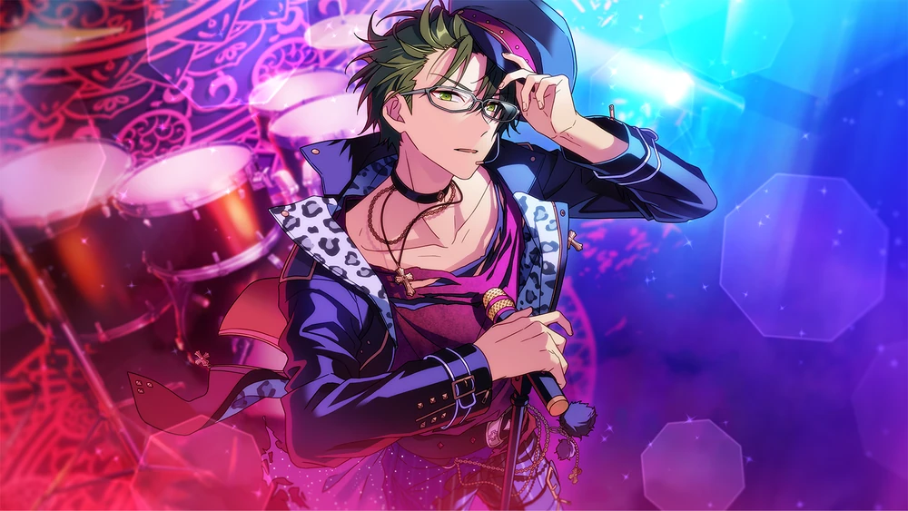
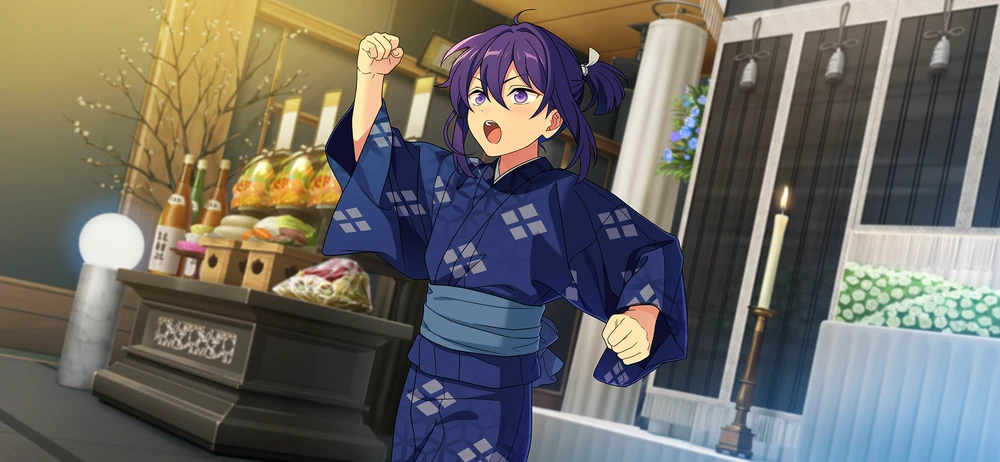
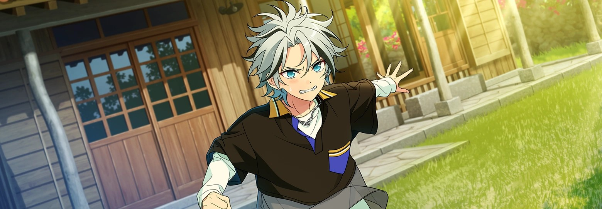
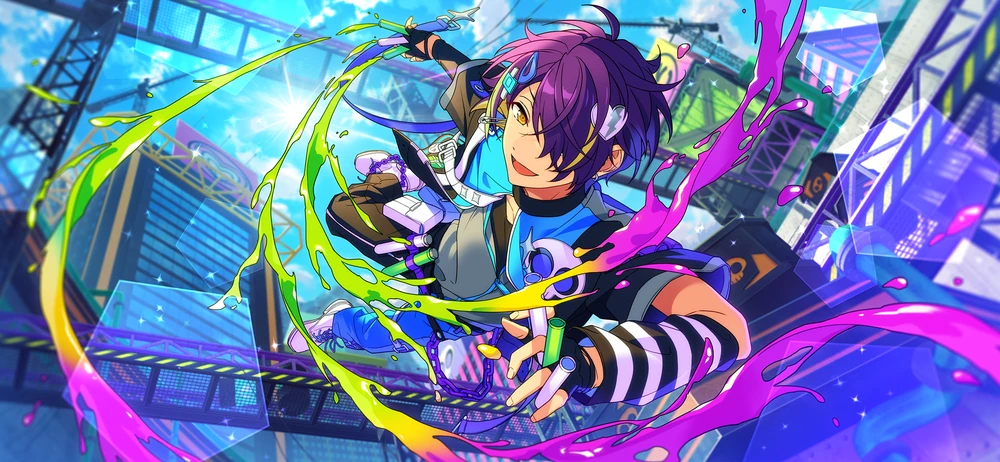
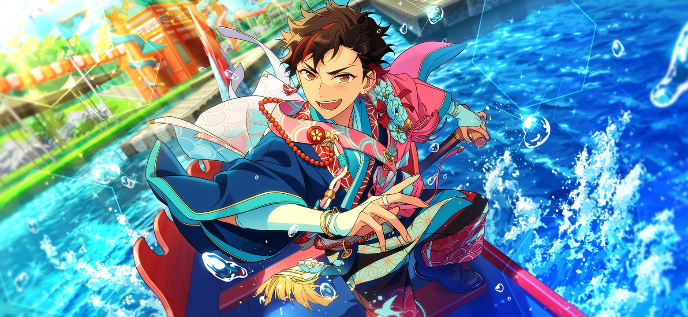
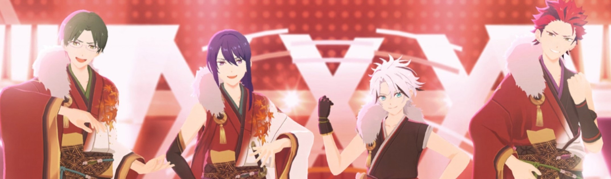
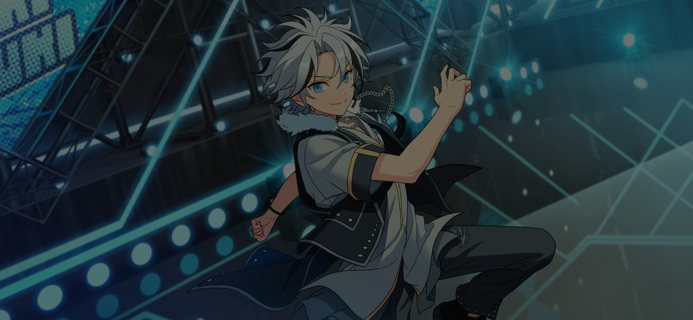
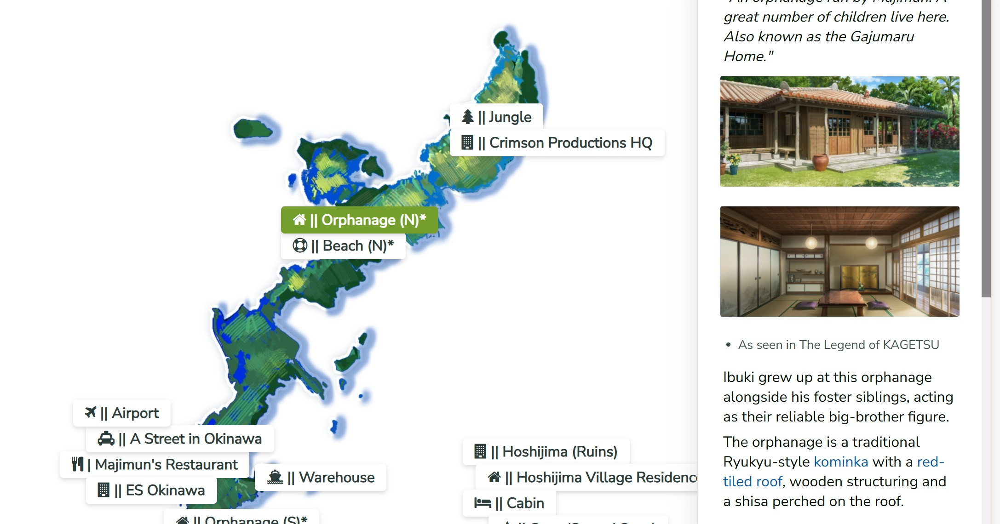

citrinesea pages
These are pages of essays, resources and tools I've put together over time!
A tool to filter through different AKARYUSEI translations, including Ibuki and Madara.

This brief timeline tracks the creation of AKATSUKI and its brief lifetime as a duo.
This page keeps track of random lore bits about AKARYUSEIbuki, updated and corrected over time.

(WIP) Building a character bible for the families and family members of AKARYUSEIbuki. Current characters added: Keito, Souma.

A roadmap detailing the different AKARYUSEI stories that have built up to Ibuki's inclusion in the cast.

(WIP) Looking for inspiration? Filter through color palettes based off of various AKARYUSEIbuki cards. Current characters added: Keito, Kuro.
(WIP) A guide to which characters know Keito's mangaka alias, Mizuhanome.

Here, Keito will help you track your goals for your savings and help you allocate your paychecks.

Bite-sized translation note entries about traditions rooted in Ryukyuan culture

An analysis on the parallels between Shinsei AKATSUKI and the history of the Ryukyu Kingdom and Japan.

Part one of Contextualizing Shinsei AKATSUKI, discussing the parallels between Ibuki and AKATSUKI and a) the Black Ships, b) Japanese Spirit, Western Technology, and c) the Meiji Restoration.
Part two of Contextualizing Shinsei AKATSUKI, discussing the parallels between Ibuki's search for true Japanese-style and a) the Ryukyu Disposition and b) Ifa Fuyu's Common Ancestry Theory.
Part three of Contextualizing Shinsei AKATSUKI, discussing the parallels between Ibuki's entrance into the "war unit" AKATSUKI and the Battle of Okinawa.

This map places locations used in Ensemble Stars with real-life inspirations or equivalents on a to-scale map in Okinawa.